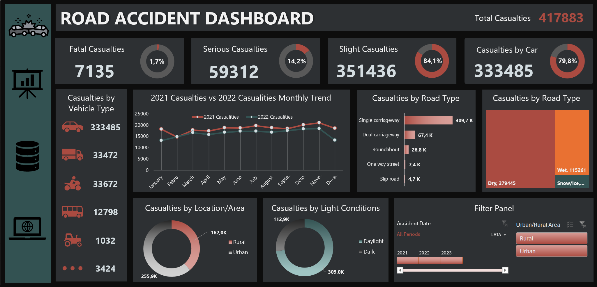

Details
Goals
- Monitor Road Safety Trends:
Track road accident casualties over time to identify patterns and inform safety initiatives. - Understand Casualty Types:
Break down fatalities, serious injuries, and slight injuries to target areas for reducing the severity of accidents. - Analyze Vehicle and Road Factors:
Assess how vehicle types, road conditions, and locations contribute to accidents. - Improve Traffic Safety Policies:
Use data insights to develop strategies that reduce accidents in high-risk areas and conditions.
Analysis
Business Questions:
- What is the total number of casualties, and how are they distributed among different severities (fatal, serious, slight)?
- What percentage of the total casualties are fatal?
- How do road conditions (wet, dry, snow/ice) influence accidents?
- Which road type has the highest number of casualties?
- What are the trends in casualties between 2021 and 2022?
- How have monthly casualty numbers evolved across these years?
- Which types of vehicles are most frequently involved in accidents?
- Are cars the leading vehicle type in road accidents?
- How do light conditions (daylight vs. dark) impact accident severity?
- Are more accidents happening in daylight or dark conditions?
- Which locations (rural vs. urban) experience more casualties?
- Do rural or urban areas have a higher number of casualties?
Data Exploration
Dashboard:
Key Findings
- Casualty Overview:
- There are a total of 417,883 casualties. Of these, 7,135 (1.7%) are fatal, while the majority (351,436, 84.1%) are classified as slight injuries.
- Vehicle Type Insights:
- Cars account for the highest number of casualties (333,485), making them the most frequent vehicle involved in road accidents, followed by motorcycles (33,672)./li>
- Road Conditions:
- Most accidents occur on dry roads (279,445), while wet roads account for 115,261 casualties.
- Single carriageway roads see the highest casualties (309.7K), indicating a potential focus area for road safety measures.
- Location and Time:
- Urban areas (255.9K casualties) experience more casualties than rural areas (162.0K).
- More accidents occur during daylight conditions (305,000 casualties), suggesting that visibility may not always be a factor in accidents.
- 2021 vs. 2022 Trend:
- The casualty trend shows relative consistency between 2021 and 2022, with slight monthly variations but no dramatic changes in overall accident numbers.
Recommendations:
- Target High-Casualty Road Types:
- Focus road safety campaigns on single carriageway roads, as they are associated with the highest number of casualties
- Improve Urban Traffic Safety:
- Since urban areas account for the majority of casualties, invest in safety features like better signage, traffic lights, and pedestrian crossings in high-traffic urban zones.
- Enhance Road Safety During Daylight:
- Despite fewer accidents occurring at night, the high number of casualties during daylight indicates the need for additional safety measures (e.g., speed control) even in seemingly safe conditions.
- Adapt Policies for Weather Conditions:
- Continue addressing issues related to wet road conditions, which are responsible for a significant number of accidents, by implementing better road drainage systems and promoting cautious driving in adverse weather.